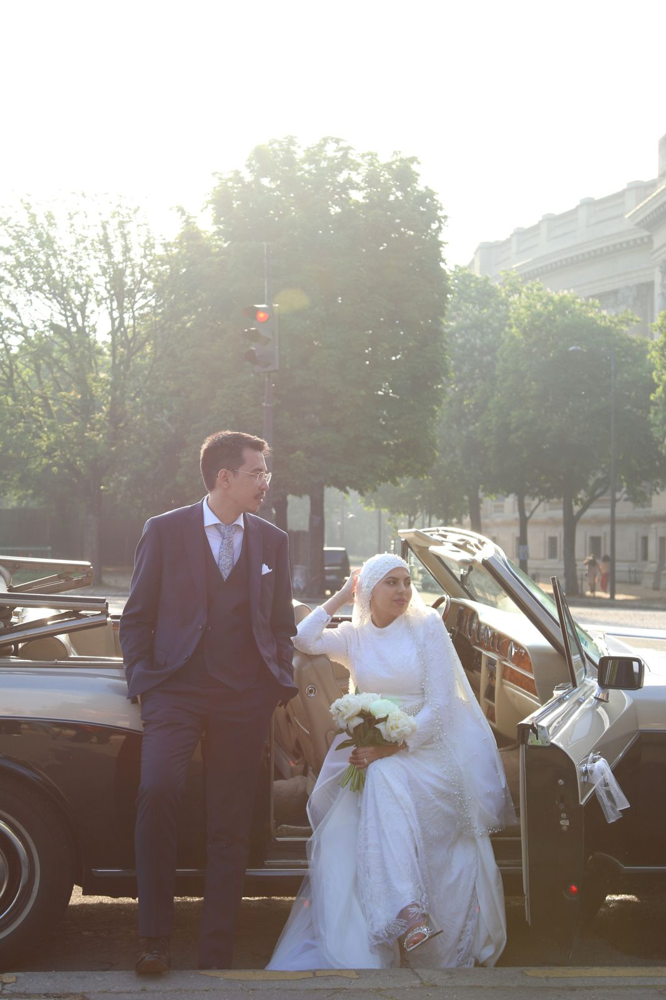
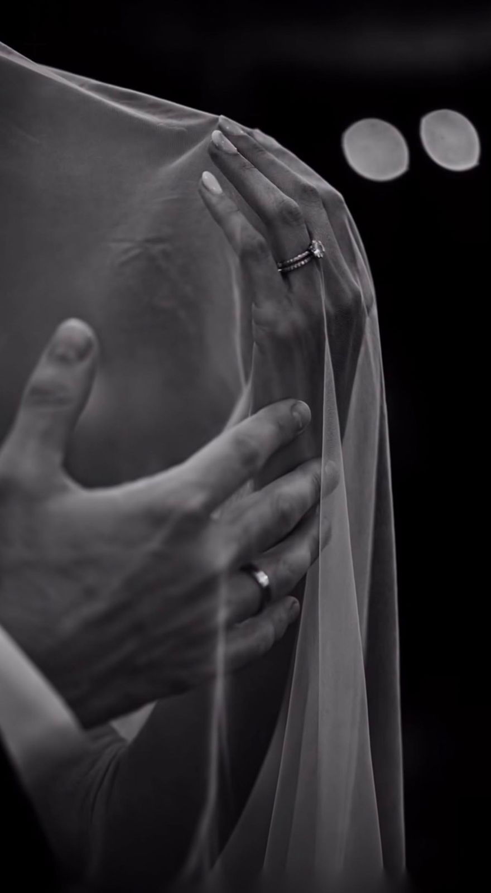
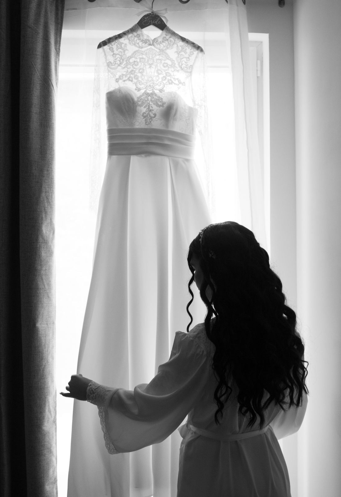
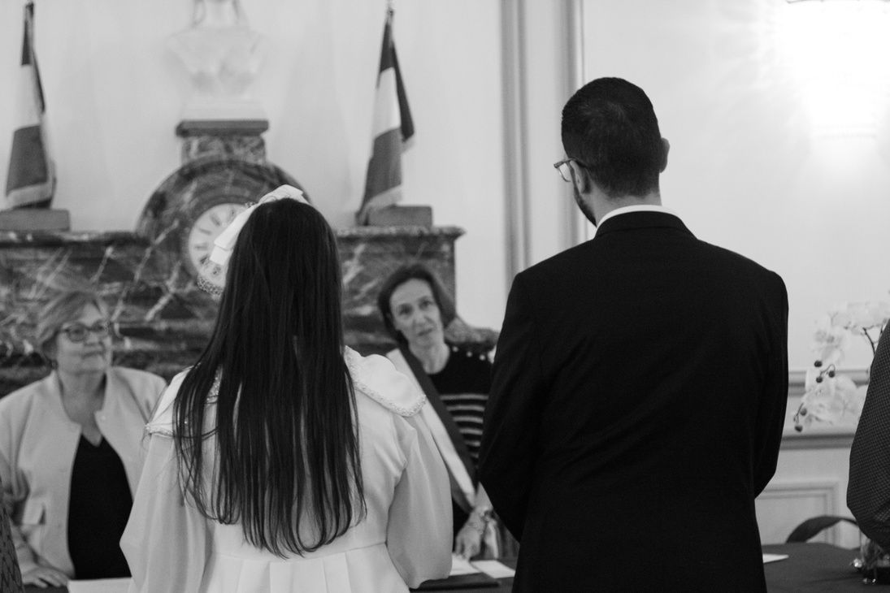
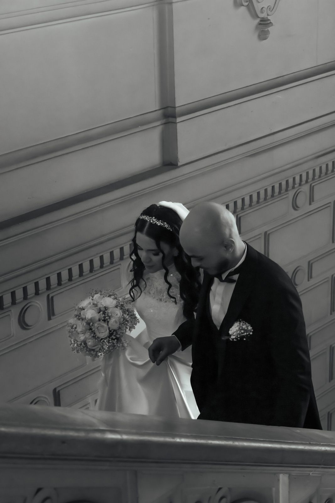
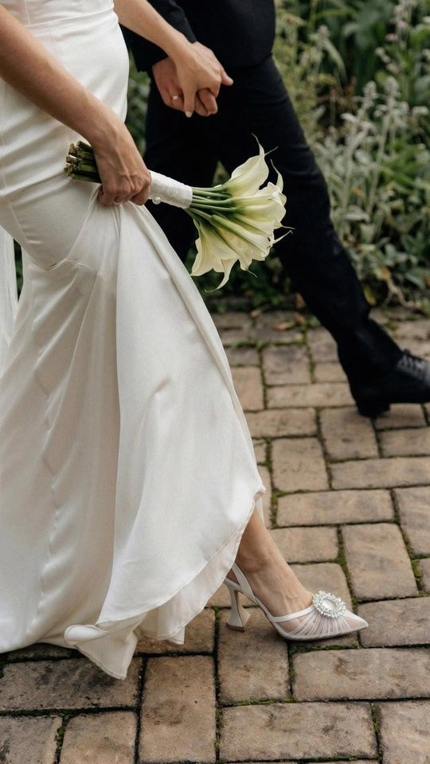
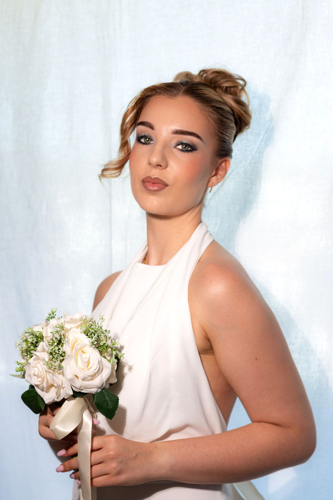
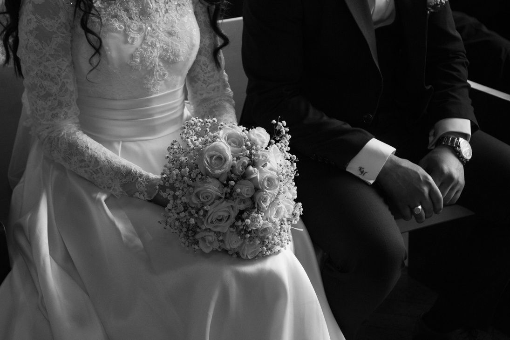
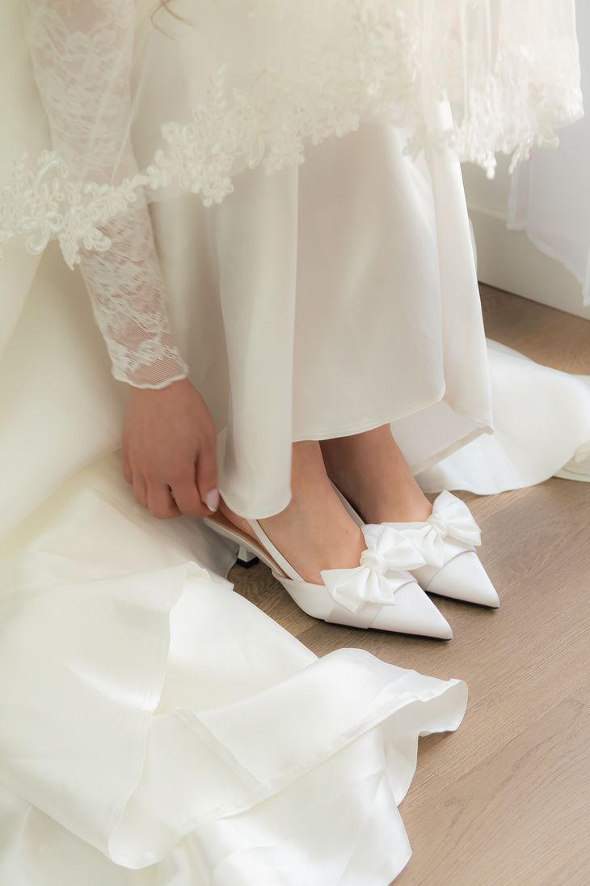

L’Instant500 €
Pour garder l’essentiel de votre mariage.
3 à 4 h de présence — la mairie, les portraits de couple et de famille. 80 photos retouchées, galerie privée complète sous 7 semaines.
Photographe de mariage à Paris depuis 2019. Je suis là le jour J, discrètement, pour que vous puissiez un jour retomber sur ces images… et vous redire oui.
Votre date est peut-être encore libre →

Ce que j’aime le plus dans la photographie, c’est capturer les moments tels qu’ils se vivent, sans les forcer. Un fou rire en famille, un regard complice pendant la cérémonie, une larme qu’on n’avait pas prévue… Toutes ces petites choses qui rendent une journée unique.
Le jour de votre mariage, mon approche est simple : je me fais discrète, je prends le temps de m’adapter à vous et je vous laisse profiter. Pas besoin de savoir poser ni d’être à l’aise devant un objectif. Soyez simplement vous-mêmes, je m’occupe du reste.
Je parle français, anglais et arabe, ce qui m’aide souvent à mettre vos proches à l’aise, quelle que soit leur langue. Et si vous vous mariez loin de Paris, je viens avec plaisir.
Dans vingt ans, vous ne vous souviendrez pas du menu. Vous vous souviendrez de ce que vous avez ressenti : l’émotion, le bruit de la salle, les gens que vous aimez réunis au même endroit. C’est ça que j’essaie de garder.
Nada
Selon la formule que vous choisissez, je vous accompagne pour tout ou partie de ces moments. Chaque galerie suit le fil de la journée, du premier au dernier instant.

Les derniers instants avant que tout commence.

L’échange des vœux, les regards, les premières félicitations.

Quelques instants rien que pour vous deux, puis les photos avec vos proches.

L’ambiance, les discours, la fête, jusqu’au bout de la soirée.
Trois formules, pensées selon la place que la photo doit prendre dans votre journée. Pour chacune, je vous envoie 5 à 8 photos d’aperçu sous 72 h, histoire de prolonger un peu la joie du jour J.
Pour garder l’essentiel de votre mariage.
3 à 4 h de présence — la mairie, les portraits de couple et de famille. 80 photos retouchées, galerie privée complète sous 7 semaines.
Pour vivre la mairie et la fête, sans rien manquer.
6 à 8 h de présence — la mairie, les portraits, la réception. 120 photos retouchées, galerie privée complète sous 11 semaines.
Pour garder toute votre journée, des préparatifs à la fin de la soirée.
10 à 12 h de présence — les préparatifs, la mairie, les portraits, la réception. 250 photos retouchées, galerie privée complète sous 20 semaines.



Rien de compliqué : envoyez-moi un message avec votre date, la formule qui vous intéresse et quelques mots sur vous. Je vous réponds sous 24 h pour vérifier ma disponibilité et répondre à vos questions.
Si le courant passe, on s’appelle pour faire connaissance avant de finaliser. La date est confirmée à réception de l’acompte, et à partir de là, on prépare tout le reste ensemble.
06 34 99 77 65
@thevowatelier.by.nada sur Instagram